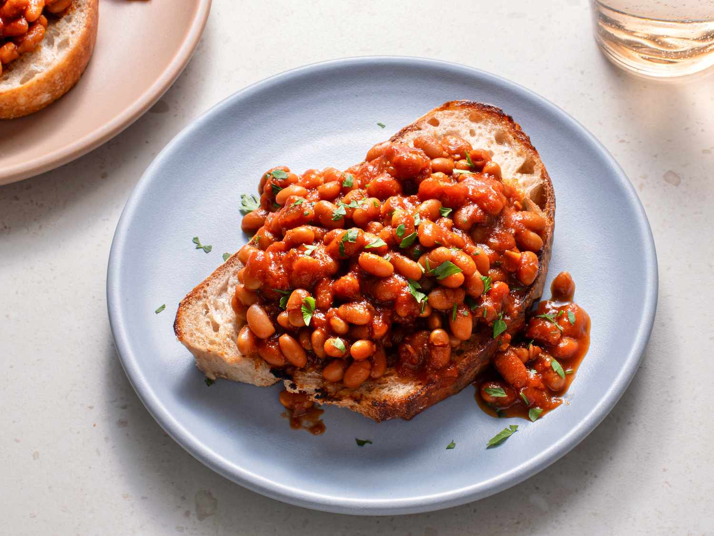

Jam Sandwich Recipe

Description
A quick easy delicious recipe for people on the go!
Ingredients
- Bread
- 1 Tin of baked beans
- 40g Chedder
Steps
- Toast bread
- Warm beans on hob for 3-4 mins. Stir constantly
- Grate cheese
- Place toast on plate and pour on beans
- Sprinkle with cheese